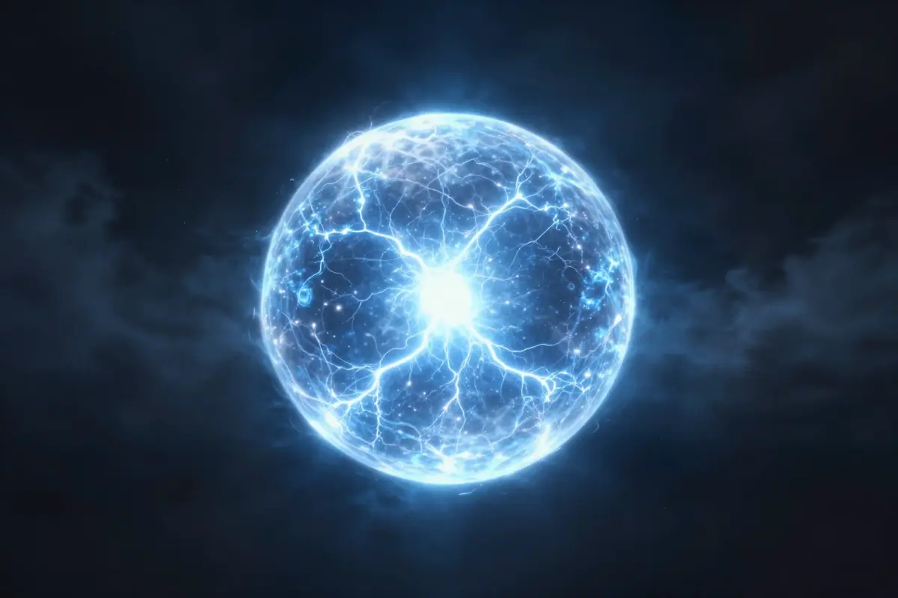

Ball Lightning: The Ghost Orbs of Storms

Ball lightning — a glowing sphere of electricity that appears during thunderstorms and defies scientific explanation
It was the afternoon of October 21, 1638. In the tiny village of Widecombe-in-the-Moor, on Dartmoor in Devon, England, about 300 people sat in St. Pancras Church for Sunday service. Suddenly a strange and terrible darkness fell over the building. The worshippers could no longer see to read their prayer books.
Then came a thunderous roar, “like unto the sound and report of many great cannons.” A blinding flash of light followed. Accounts published within months say a “great fiery ball” tore through a window. It bounced around inside the church and caused terrible damage.
Four people were killed. About sixty were hurt. The minister’s wife was burned “in a very pitiful manner.” A dog ran out the door, was thrown around by an unseen force, and fell dead.
Some victims had bad burns on their skin, yet their clothes were untouched. Not a single thread was singed. The building was badly damaged. It was one of the most frightening and best-recorded meetings between people and one of nature’s strangest events. That event is called ball lightning.
Ball lightning is one of the most puzzling mysteries in the science of the air and weather. Witnesses describe a glowing ball that appears almost only during or just after thunderstorms. Thousands of people have reported it over at least eight centuries. They include scientists, soldiers, airline pilots, and ordinary people around the world.
Surveys suggest that about 5 percent of the world’s people say they have seen ball lightning. That would be hundreds of millions of people. Yet after centuries of reports and decades of research, ball lightning is still unexplained. No laboratory test has fully copied it as it happens in nature. And no single scientific theory has won general agreement.
The objects that witnesses describe are very strange. They are glowing spheres. Some are as small as a pea. Some are several meters wide. Most are between 10 and 40 centimeters across. They last from one second to over a minute before they vanish. Sometimes they vanish silently. Sometimes they end with a loud bang or an explosion.
They are usually red, orange, or yellow. White, blue, and green ones have also been reported. They can appear indoors or outdoors. Some hover without moving. Some seem to move with a purpose. They can pass through solid walls and windows without harming them. They can even move against the wind.
The earliest known written report of ball lightning comes from the thirteenth century. The English writer Gervase of Tilbury recorded a sighting in his “Chronica” around 1211. He described a glowing sphere that came down from the sky in a thunderstorm. It entered a house, passed through, and did no damage.
His report has almost every feature of modern descriptions. There was a thunderstorm. The shape was round. It glowed. It passed through solid walls. In the end it faded away.
The Great Thunderstorm of Widecombe-in-the-Moor in 1638 is still the most dramatic and best-recorded case from the past. But it is far from the only one. In 1725, the crew of the sloop Catherine and Mary reported a ball of fire. It came down from the ropes and sails during a storm. It moved slowly across the deck and exploded. One sailor was killed.
In 1749, the crew of HMS Montague saw a blue ball of fire roll along the deck in a storm. It split into two halves and vanished with a violent explosion.
One of the most famous scientific victims of ball lightning was Georg Wilhelm Richmann. He was a German physicist working in St. Petersburg, Russia. In 1753, he was doing experiments on electricity in the air. This field of study had been made famous by Benjamin Franklin’s kite experiment. Richmann had built a device to measure electric charge in the air.
During a thunderstorm on August 6, 1753, a ball of fire is said to have jumped from the device and struck Richmann in the head. He died at once. His assistant stood nearby. He was knocked out but lived.
Richmann’s death is often called the first known death caused directly by ball lightning. Some historians say he may have been killed by an ordinary lightning strike.
In more modern times, trustworthy witnesses have kept reporting the phenomenon. In 1972, several people in Hardwick, Vermont, each saw a glowing ball hovering near a church during a thunderstorm. It moved slowly and then vanished. In the 1960s, crew members of the USS Eagle, a U.S. Coast Guard training ship, reported ball lightning entering the ship’s bridge in a storm at sea. It moved through the closed space and left without causing damage.
One of the most dramatic eyewitness stories comes from an unexpected person. He was Tsar Nicholas II, the last Emperor of Russia. In his memoirs, Nicholas described seeing ball lightning during a summer thunderstorm at his estate. A glowing sphere of fire came down from the sky during a violent storm. It moved slowly across the grounds, near where he and his family were sheltering.
The Tsar described it as a ball of fire about the size of a football. It moved calmly and with care, and then faded away without harm. His account is especially valuable for two reasons. He was a head of state with no clear reason to invent or exaggerate a story. And he wrote it in his private memoirs, not for the public.
For centuries, most scientists were very doubtful about ball lightning. The idea was so strange. Glowing balls that pass through walls? Many physicists said it was an optical illusion, an afterimage, or a hallucination caused by the bright flash of normal lightning.
This doubt began to fade in the late twentieth century. There were simply too many reports from trained observers to ignore.
The turning point came in 2012. A team of Chinese researchers led by Jianyong Zheng and Xiao Yang at Northwest Normal University in Lanzhou made the first-ever spectroscopic observation of natural ball lightning. Spectroscopy means studying the colors in a light to learn what it is made of.
The team was watching ordinary lightning during a thunderstorm in Qinghai Province, China. Then a ball lightning event happened near a tower that had been struck. Their instrument recorded the light of the glowing ball. It lasted about 1.6 seconds. The light showed silicon, iron, and calcium.
These fit one idea. It says that a lightning strike turns the sand or soil on the ground into vapor. The vapor makes a glowing cloud called a plasma, which is a very hot, electrically charged gas. The silicon dioxide in sand or soil would then give a plasma of silicon vapor.
The Chinese result was a landmark. It was the first direct physical proof of what ball lightning is made of. It was published in the respected journal Physical Review Letters. The silicon in the light strongly backed the vaporized silicon idea. Two New Zealand chemists, John Abrahamson and James Dinniss, first suggested it in 2000.
They proposed that a lightning bolt hitting soil has huge energy. It turns silicon dioxide in the ground into vapor. This makes a cloud of tiny silicon particles called nanoparticles. They mix with oxygen in the air. They then burn, making a ball that keeps itself glowing.
This idea neatly explains several key features of ball lightning. These are its link to thunderstorms, its round shape, how long it lasts, and its color. The 2012 observation was not a perfect match for the model. But it was close enough to excite the research world.
Scientists have also tried to make ball lightning in the laboratory. In the 1970s and 1980s, researchers tried microwave experiments. They used focused microwaves to try to make steady balls of plasma. Experiments with microwave ovens have made small, short-lived plasma balls. But these fade within a fraction of a second. Many natural sightings last for minutes, which is much longer.
In the 2000s, researchers at the University of Innsbruck in Austria studied whether microwaves from lightning could make ball-lightning-like effects. Some experiments sent high-voltage electricity across or through water. They made glowing balls that lasted for several seconds. These offer another possible model.
None of these tests has made a convincing, lasting, large ball of lightning under controlled conditions.
Scientists have suggested a huge range of explanations. This shows how hard it is to explain something with so many puzzling features. The vaporized silicon idea is the leading one today. But it does not easily explain balls seen indoors, inside aircraft, or high above the ground. There is no soil there to turn into vapor.
The microwave cavity idea says that ball lightning is a ball of microwave energy trapped inside a shell of plasma. A lightning bolt charges the air. This makes a burst of microwaves. The microwaves get trapped in a hollow formed by the charged air itself. They keep the plasma going, and the plasma keeps the hollow in place. This could last for seconds or even minutes.
The idea can explain balls seen indoors. It can also explain how they pass through windows. But laboratory tests have not made long-lasting microwave plasma balls.
The soliton idea says that ball lightning is a kind of electromagnetic soliton. That is a packet of waves that holds its shape as it travels. The buoyant plasma idea says that ball lightning is just a pocket of charged air. It is light enough to float and steady enough to last.
All plasma ideas face one problem. How can a plasma ball last tens of seconds in open air without fading? In the laboratory, plasmas usually collapse within a thousandth of a second once the energy source is removed.
One surprising idea comes from researchers including Joseph Peer and Alexander Kendl at the University of Innsbruck. Their 2014 study suggests that some ball lightning reports may be hallucinations. The cause would be the strong magnetic fields from a nearby lightning strike. The fast-changing field could make a kind of magnetic brain stimulation, called transcranial magnetic stimulation (TMS), in the part of the brain that sees. People would then see a glowing, moving ball of light.
This could explain why many witnesses often see a ball at the same time. It could also explain why a ball sometimes seems to move in ways that break the laws of physics.
But it cannot explain reports of ball lightning that caused real damage, such as burned clothes, charred wood, or melted metal. And it cannot explain the 2012 observation, which recorded real light from outside. Most researchers think ball lightning is a real physical event, not a hallucination. The hallucination idea may explain some of the reports.
Surveys in many countries keep finding that about 5 percent of people say they have seen ball lightning. A well-known survey by Stanley Singer in the 1960s collected over 2,000 reports from witnesses in several countries. If the estimate is right, over 400 million people alive today have seen it.
A typical event is a glowing ball about 10 to 40 centimeters wide. It lasts 10 to 30 seconds. It appears during or just after a thunderstorm. The most common colors are orange and yellow, then red, white, blue, and green. About half of the reported events end with the ball just fading away. The other half end with a loud bang or an explosion.
These numbers stay the same across decades of reports and dozens of countries. This is one of the strongest arguments that ball lightning is a real event that can happen again and again, and not just a set of mistakes.
Ball lightning is still one of the most stubborn puzzles in nature. There was the 2012 observation. There is the vaporized silicon idea. And there have been decades of laboratory tests. Even so, we cannot predict when or where ball lightning will appear. We cannot reliably make it in a controlled test. And we cannot fully explain the wide range of behavior that witnesses have reported over the last eight centuries.
The puzzle sits where the physics of the air, plasma science, electromagnetism, and even brain science meet. It uses almost every branch of physical science, and it still refuses to be solved.
The International Committee on Ball Lightning (ICBL) has held scientific meetings on the subject since 1988. It still helps a small, devoted group of scientists share their research and debates.
Yet the mystery goes on. Next time you are caught in a thunderstorm, and the lightning flashes, and the thunder rolls, look carefully. You might see something that science still cannot explain. It might be a glowing sphere, drifting through the storm like a ghost. What is it?
References & Further Reading
Wikipedia: The Great Thunderstorm (1638) — Detailed account of the Widecombe-in-the-Moor incident
Britannica: Ball Lightning — Encyclopedic overview of the atmospheric phenomenon
Wikipedia: Lightning — Background on the parent phenomenon that produces ball lightning
Wikipedia: Plasma (Physics) — The state of matter relevant to most ball lightning theories
📚 Recommended Reading: Ball Lightning: An Unsolved Problem in Atmospheric Physics by Mark Stenhoff (on Amazon) — As an Amazon Associate, we earn from qualifying purchases.
Editorial note: scientific understanding of ball lightning continues to advance with new spectroscopic data and laboratory experiments. See our Editorial Policy.